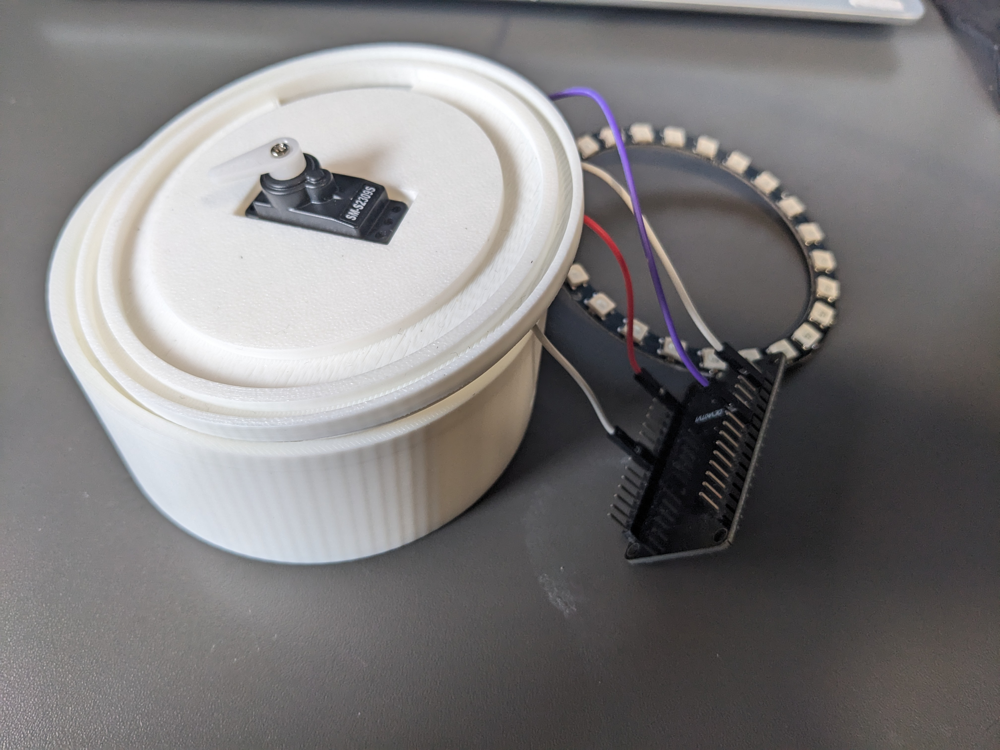
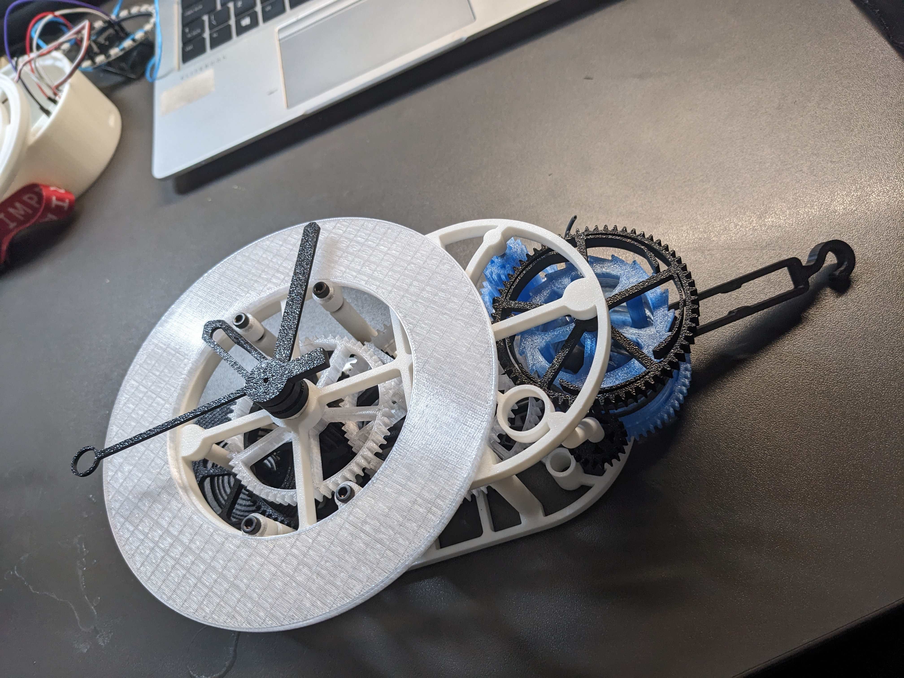
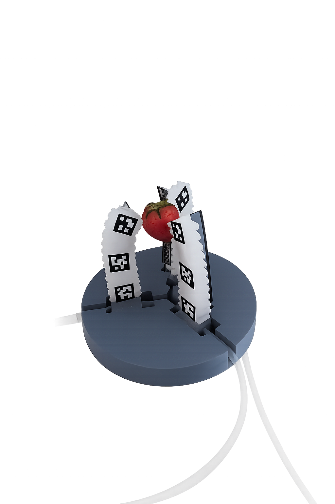

Aika Ono Portfolio.
About
I'm a 🇯🇵 medical student at the University of Edinburgh, having obtained a 1st in Biomedical Engineering at Imperial College London.
As a Design Engineer...
I want to make stuff that is:
Hobbies: Drawing, Dance, Poker
As a Design Engineer...
I want to make stuff that is:
- Beautiful
- Has both functionality and human warmth
- Gives the emotion of awe to people
Hobbies: Drawing, Dance, Poker
Skills
Design
Fusion 360
Rhino / Grasshopper
OpenSCAD
Fabrication
3D Printing
Laser Cutting
Silicone Casting
Electronics
Arduino
ESP32
Programming
Python
Machine Learning
Data Analysis
Visual Design
Clip Studio Paint
Adobe Illustrator
Featured projects

03WIPPersonal
Keshiki
IoT device for learned helplessness. A dome + AI companion that grows with you.

04WIPPersonal
流体力学時計
機械式エスケープメントと流体の渦放出の共通点を表現
01WIPPersonal
Straight Lines & Curves
Grasshopper tool to quantify linearity as a tuneable parameter.

02
Hydraulic Gripper
Hydraulically actuated soft silicone hand with ArUco vision control.
Trashy Quick Builds